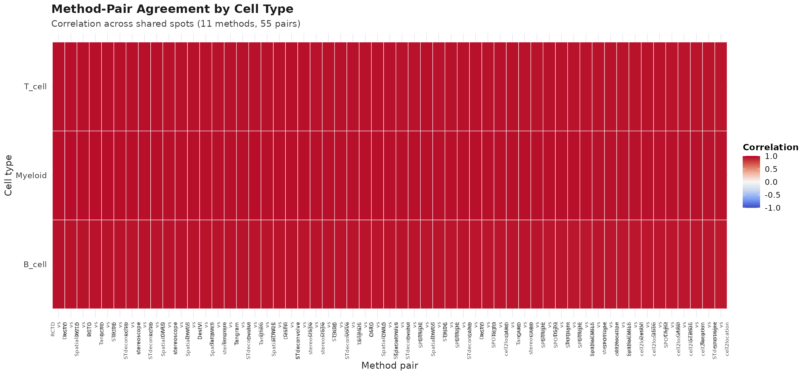
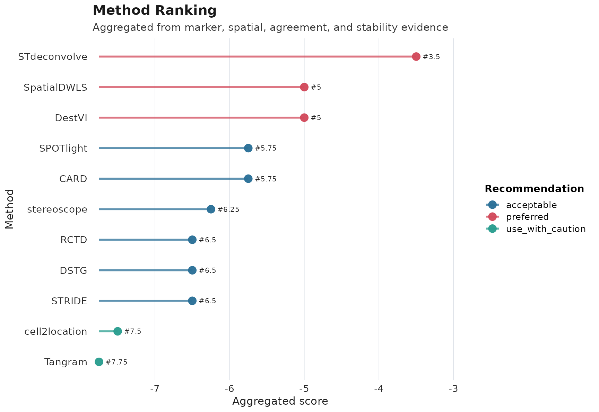
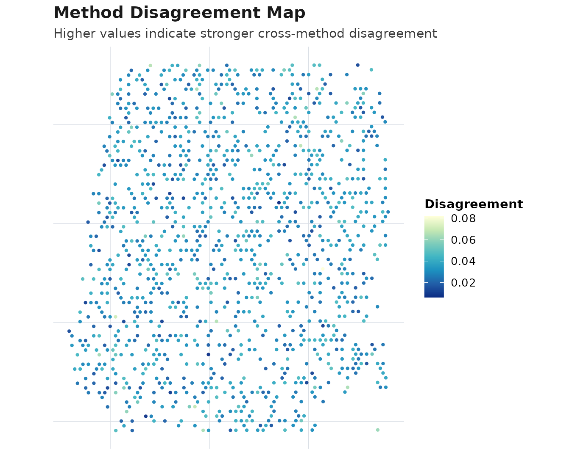
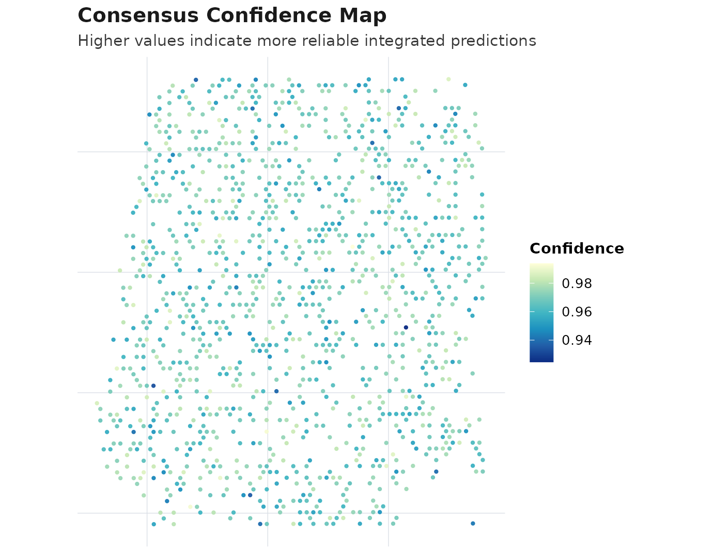

AEGIS One-Step Deconvolution Workflow
Source:vignettes/AEGIS-one-step-deconvolution.Rmd
AEGIS-one-step-deconvolution.Rmd1) What one-step deconvolution means in AEGIS
AEGIS supports three method support modes: -
run_and_import_r: runnable directly in R -
run_and_import_python: runnable through Python (optional) -
import_only: import exported outputs only
Use the registry first:
registry <- get_supported_methods()
knitr::kable(registry)| method_name | support_mode | can_run_in_r | can_run_in_python | requires_reference | requires_spatial_coords | expected_output_type | adapter_reader | reader_function | runner_function | dependency_type | backend_dependency | notes |
|---|---|---|---|---|---|---|---|---|---|---|---|---|
| RCTD | run_and_import_r | TRUE | FALSE | TRUE | TRUE | proportion | read_rctd | read_rctd | run_rctd | r_package | spacexr | R-native runner; prefers spacexr pipeline when available. |
| SPOTlight | run_and_import_r | TRUE | FALSE | TRUE | TRUE | proportion | read_spotlight | read_spotlight | run_spotlight | r_package | SPOTlight | R-native runner; requires SPOTlight package and suitable reference inputs. |
| cell2location | run_and_import_python | FALSE | TRUE | TRUE | TRUE | abundance | read_cell2location | read_cell2location | run_cell2location | python_module | cell2location,scvi | Python via reticulate; if unavailable, import exported tables with read_cell2location(). |
| CARD | run_and_import_r | TRUE | FALSE | TRUE | TRUE | proportion | read_card | read_card | run_card | r_package | CARD | R-native runner; requires CARD package and suitable reference inputs. |
| SpatialDWLS | import_only | FALSE | FALSE | FALSE | FALSE | proportion | read_spatialdwls | read_spatialdwls | NA | import_only | NA | Import-only in P9. Use read_spatialdwls(). |
| stereoscope | run_and_import_python | FALSE | TRUE | TRUE | TRUE | proportion | read_stereoscope | read_stereoscope | run_stereoscope | python_module | scvi | Python via reticulate (experimental wrapper). |
| DestVI | run_and_import_python | FALSE | TRUE | TRUE | TRUE | abundance | read_destvi | read_destvi | run_destvi | python_module | scvi | Python via reticulate (experimental wrapper). |
| Tangram | run_and_import_python | FALSE | TRUE | TRUE | TRUE | mapping | read_tangram | read_tangram | run_tangram | python_module | tangram | Python via reticulate (experimental wrapper). |
| STdeconvolve | import_only | FALSE | FALSE | FALSE | FALSE | latent | read_stdeconvolve | read_stdeconvolve | NA | import_only | NA | Import-only in P9. Use read_stdeconvolve(). |
| DSTG | import_only | FALSE | FALSE | FALSE | FALSE | proportion | read_dstg | read_dstg | NA | import_only | NA | Import-only in P9. Use read_dstg(). |
| STRIDE | import_only | FALSE | FALSE | FALSE | FALSE | proportion | read_stride | read_stride | NA | import_only | NA | Import-only in P9. Use read_stride(). |
2) Load spatial data and markers
data("aegis_example", package = "AEGIS")
seu <- aegis_example
markers <- readRDS(system.file("extdata", "marker_list.rds", package = "AEGIS"))4) Run one method (direct execution)
res_one <- run_deconvolution(
seu = seu,
reference = reference,
methods = "SPOTlight",
strict = TRUE
)
obj_one <- run_aegis(res_one$seu, deconv = res_one$deconv, markers = markers)5) Run multiple methods in one step
res_multi <- run_deconvolution(
seu = seu,
reference = reference,
methods = c("SPOTlight", "CARD", "RCTD"),
strict = FALSE
)
obj_multi <- run_aegis(res_multi$seu, deconv = res_multi$deconv, markers = markers)6) Full one-step wrapper
obj_full <- run_aegis_full(
seu = seu,
reference = reference,
methods = c("SPOTlight", "CARD", "RCTD"),
markers = markers,
strict = FALSE
)7) Optional Python-backed methods
Python-backed methods are optional. If Python modules are missing: - strict mode: clear error - non-strict mode: method is skipped with a message
res_py <- run_deconvolution(
seu = seu,
reference = reference,
methods = c("cell2location", "DestVI", "Tangram"),
use_python = TRUE,
strict = FALSE
)8) Downstream AEGIS analysis and visualization
For a fully reproducible vignette run (without backend dependencies), this chunk uses simulated deconvolution and then runs the same downstream pipeline.
demo_methods <- registry$method_name
deconv_demo <- simulate_deconv_results(
seu,
methods = demo_methods,
cell_types = c("B_cell", "T_cell", "Myeloid"),
seed = 909
)
#> Loading required namespace: SeuratObject
obj <- run_aegis(seu, deconv = deconv_demo, markers = markers)
obj <- score_methods(obj)
obj <- rank_methods(obj, method = "mean_rank")
obj <- compute_consensus(obj, strategy = "weighted", top_n = min(4, length(demo_methods)))
obj$consensus$result$methods_used
#> [1] "STdeconvolve" "SpatialDWLS" "DestVI" "SPOTlight"
plot_compare(obj, type = "heatmap")
plot_compare(obj, type = "consensus_map")
plot_compare(obj, type = "ranking")
plot_compare(obj, type = "disagreement_map")
plot_compare(obj, type = "confidence_map")
9) Practical notes
- Use direct execution when method dependencies and inputs are ready.
- Use importer functions (
read_*) when methods are not executable in your environment. - Treat Python-backed methods as optional unless you manage a validated Python environment.
- Use
run_aegis_full()for one-step execution plus downstream AEGIS analysis.